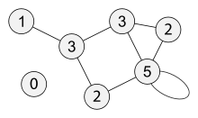

- Задание A
- Задание B
- Задание C и E
- Задание D
- Задание F
- Задание L
Матрица смежности
Матрица смежности, как и матрица инцидентности, позволяет установить множество вершин, соседних с заданной (то есть рассматриваемой в конкретной задаче), не прибегая к полному просмотру всей матрицы. Матрицы смежности обычно представляются двумерным массивом размера n x n, где n - число вершин графа.
Матрица смежности S - это квадратная матрица, в которой и число строк, и число столбцов равно n - числу вершин графа. В ячейки матрицы смежности записываются некоторые числа в зависимости от того, соединены соответствующие вершины рёбрами или нет, и от типа графа.
Матрица смежности для неориентированного графа
Элемент матрицы смежности sij неориентированного графа определяется следующим образом:
- равен единице, если вершины vi и vj смежны;
- равен нулю, если вершины vi и vj не смежны.
Если для элемента матрицы vij имеет место i = j, то есть элемент находится на диагонали, то этот элемент равен единице, если этот элемент имеет петлю, и нулю, если элемент не имеет петли.
Пример 1. Составить матрицу смежности для графа, представленного на рисунке ниже.

Ответ.
| V | 1 | 2 | 3 | 4 | 5 |
| 1 | 0 | 1 | 1 | 0 | 0 |
| 2 | 1 | 0 | 0 | 1 | 1 |
| 3 | 1 | 0 | 0 | 0 | 1 |
| 4 | 0 | 1 | 0 | 0 | 0 |
| 5 | 0 | 1 | 1 | 0 | 0 |
Таким образом, матрица смежности неориентированного графа симметрична относительно главной диагонали.
Введите количество вершин вашего графа
Вершины:Петли неориентированного графа
Петля в графе — ребро, инцидентное одной и той же вершине. В некоторых учебниках граф по определению не может иметь петель. Граф без петель — это простой граф. Встречается и другая терминология. Граф может иметь петли. Если же имеются петли, то это — псевдограф. Обычно у петли нет ориентации. Однако в ориентированном графе для отличия от смешанного графа петлям придают ориентацию.
Пример 1. Граф, содержащий петлю при вершине 1
Матрица смежности данного графа
| V | 1 | 2 | 3 | 4 | 5 | 6 |
| 1 | 1 | 1 | 0 | 0 | 1 | 0 |
| 2 | 1 | 0 | 1 | 0 | 1 | 0 |
| 3 | 0 | 1 | 0 | 1 | 1 | 0 |
| 4 | 0 | 0 | 1 | 0 | 0 | 1 |
| 5 | 1 | 1 | 0 | 1 | 1 | 0 |
| 6 | 0 | 0 | 0 | 1 | 0 | 0 |
Введите количество вершин вашего графа
Вершины:Список ребер
В списке рёбер в каждой строке записываются две смежные вершины и вес соединяющего их ребра (для взвешенного графа).
Количество строк в списке ребер всегда должно быть равно величине, получающейся в результате сложения ориентированных рёбер с удвоенным количеством неориентированных рёбер.
Пример.Простой неориентированный граф
Матрица смежности данного графа
Представление графа в виде списка ребер
| V | 1 | 2 | 3 | 4 | 5 |
| 1 | 0 | 1 | 1 | 0 | 0 |
| 2 | 1 | 0 | 0 | 1 | 1 |
| 3 | 1 | 0 | 0 | 0 | 1 |
| 4 | 0 | 1 | 0 | 0 | 0 |
| 5 | 0 | 1 | 1 | 0 | 0 |
| V1 | V2 |
| 1 | 2 |
| 1 | 3 |
| 2 | 1 |
| 2 | 4 |
| 2 | 5 |
| 3 | 1 |
| 3 | 5 |
| 4 | 2 |
| 5 | 2 |
| 5 | 3 |
Введите количество вершин вашего графа
Вершины:Матрица смежности для ориентированного графа
Элемент матрицы смежности sij ориентированного графа определяется следующим образом:
- равен единице, если из вершины vi в вершину vj входит дуга;
- равен нулю, если из вершины vi в вершину vj дуга не входит.
Как и для неориентированных графов, так и для ориентированных, если для элемента матрицы vij имеет место i = j, то есть элемент находится на диагонали, то этот элемент равен единице, если этот элемент имеет петлю, и нулю, если элемент не имеет петли.
Пример. Составить матрицу смежности для графа, представленного на рисунке ниже.

Матрица смежности.
Ребра.
| V | 1 | 2 | 3 | 4 | 5 |
| 1 | 0 | 1 | 0 | 0 | 0 |
| 2 | 0 | 1 | 0 | 0 | 0 |
| 3 | 1 | 0 | 0 | 0 | 0 |
| 4 | 0 | 1 | 0 | 0 | 0 |
| 5 | 0 | 1 | 1 | 0 | 0 |
| V1 | V2 |
| 1 | 3 |
| 2 | 1 |
| 2 | 2 |
| 2 | 4 |
| 2 | 5 |
| 3 | 5 |
Таким образом, матрица смежности ориентированного графа не симметрична.
Введите количество вершин вашего графа
Вершины:Список ребер
Пример.По заданным ребрам построить матрицу смежности этого графа
Представление графа в виде списка ребер
| V1 | V2 |
| 1 | 2 |
| 1 | 3 |
| 2 | 4 |
| 2 | 5 |
| 3 | 5 |
Ответ: Матрица смежности данного графа
| V | 1 | 2 | 3 | 4 | 5 |
| 1 | 0 | 1 | 1 | 0 | 0 |
| 2 | 1 | 0 | 0 | 1 | 1 |
| 3 | 1 | 0 | 0 | 0 | 1 |
| 4 | 0 | 1 | 0 | 0 | 0 |
| 5 | 0 | 1 | 1 | 0 | 0 |
Ввод ребер:
Степень вершины
Степень или валентность вершины графа — количество рёбер графа G, инцидентных вершине x. При подсчёте степени ребро-петля учитывается дважды.
Пример. Граф, на вершинах которого отмечены степени.
Введите количество вершин вашего графа
Вершины: